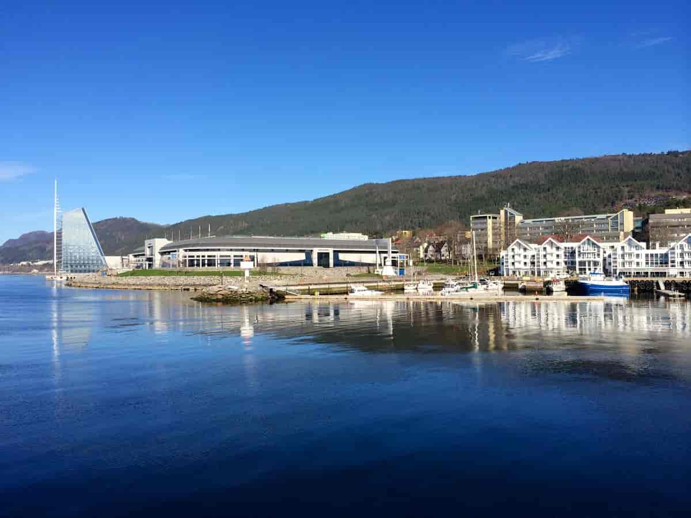

Molde
Jeg er født og oppvokst i Molde. For de som kjenner litt til Molde, så har jeg spesifikt bodd på Fugelset og på Bergmo. Mye av familien min på min mors side bor på Røbekk.
Molde er kjent som rosenes by - fordi det var mye roser i byen før. Mange kjente personer kommer fra Molde, som f.eks Kjell Magne Bondevik, Jo Nesbø, Ane Brun mm. Men det folk flest assosierer med Molde er vel fotballlaget, Molde FK.
Jeg har også bodd et par år i Surnadal og i Trondheim.
Hva kan man gjøre i Molde?
Om sommeren så kan man oppleve Molde Jazzfestival, som bruker å ha mange kule og interessante konserter, samt noen mer mainstream artister. Som turist i Molde er det vel også verdt turen opp til Varden for å se utsikta over Molde.
Man kan ta båt ut til Hjertøya, som er et sted jeg og familien har vært mye. Her er man adskilt fra trafikk og byliv, og det er badestrand og stupetårn. Man kan også gå tur langs hele øya, som tar omtrent en time.